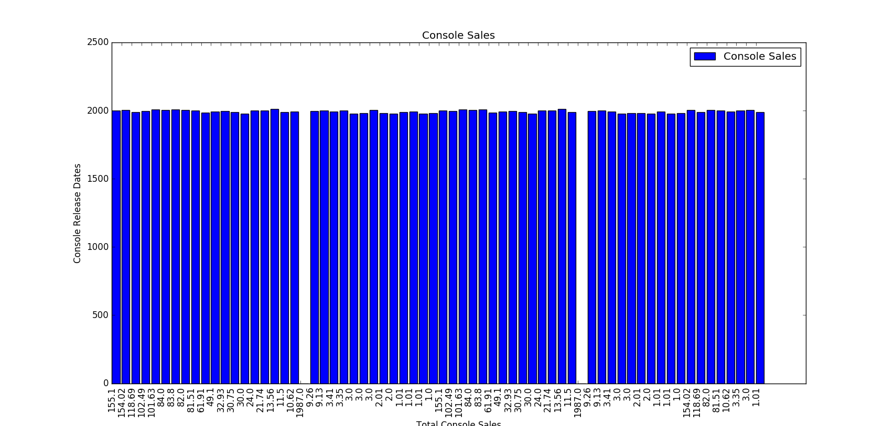
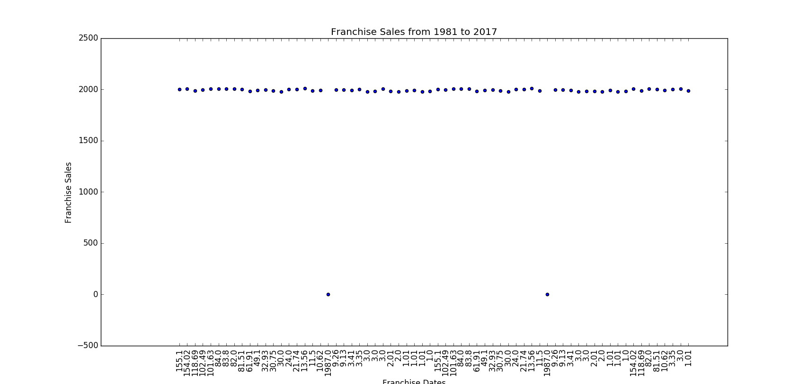

Data Set #1 involves the numbers of the most famous video game franchise sales that had sold at least 5 million copies over
the last 3 decades collected from WIKIPEDIA page for the best selling franchises. The following images show the bar graphs and
scatter plots of franchise and console sales
Data Set #2 involves the sales of the most famous video game consoles from the wikipedia page for the best selling video game comsoles.
Data sets #3 - #8 show the popular genres based on based on the following plots from statista. It shows us genres on high demand.
"What are the gainful genres in video game?" This part of the project is analysing data on video game genres like shooter, action, role-playing,
sport games, adventure, fighting, strategy, racing and others. For the answer of the question "what are the gainful genres in video game?",
we used datasets related to video game genres to analyse from statista.


The following images show the bar graphs and scatter plots of the franchise and console sales
This image shows that the franchises with the most sales are the ones that started from 1980 to 1985. As we move forward in the
chronological order, we see the numbers of sales seems to alternate and ends with the lowest number in 2005
This scatter plot illustrated the same points recorded in the graph above. its use will be to show the different
franchises using different colors

This image shows the bar graph use to display console sales
'PlayStation_2"', 'Nintendo_DS"', 'Game_Boy"', 'PlayStation_(console)"', 'Wii"', 'Xbox_360"', 'PlayStation_3"', 'PlayStation_Portable"',
'Game_Boy_Advance"', 'Nintendo_Entertainment_System"', 'Super_Nintendo_Entertainment_System"', 'Nintendo_64"', 'Sega_Genesis"',
'Atari_2600"', 'Xbox_(console)"', 'GameCube"', 'Wii_U"', 'Master_System"', 'Sega_Game_Gear"', 'TurboGrafx-16"', 'Sega_Saturn"',
'Dreamcast"', 'Sega_Pico"', 'WonderSwan"', 'Color_TV_Game"', 'Intellivision"', 'N-Gage_(device)"', 'ColecoVision"',
'Magnavox_Odyssey%C2%B2"', 'Atari_Lynx"', 'Philips_CD-i"', 'Telstar_(game_console)"', 'Atari_5200"', 'PlayStation_2"',
'PlayStation_(console)"', 'Wii"', 'Xbox_360"', 'PlayStation_3"', 'Nintendo_Entertainment_System"',
'Super_Nintendo_Entertainment_System"', 'Nintendo_64"', 'Sega_Genesis"', 'Atari_2600"', 'Xbox_(console)"', 'GameCube"', 'Wii_U"',
'Master_System"', 'TurboGrafx-16"', 'Sega_Saturn"', 'Dreamcast"', 'Sega_Pico"', 'Color_TV_Game"', 'Intellivision"', 'ColecoVision"',
'Magnavox_Odyssey%C2%B2"', 'Philips_CD-i"', 'Telstar_(game_console)"', 'Atari_5200"', 'Nintendo_DS"', 'Game_Boy"',
'PlayStation_Portable"', 'Game_Boy_Advance"', 'Sega_Game_Gear"', 'WonderSwan"', 'N-Gage_(device)"', 'Atari_Lynx"'

The following images show the bar graphs and scatter plots of the franchise and console sales
In conclusion, the hypothesis is false. The franchises sold in the lowest selling systems only have large numbers because
they release at the beginning of the 1980s and have continuously sold multiple sequels and different console versions of the games.
For example, even through the Mario Franchise has over 528 million sold copies, these are not sold on Playstation 2 which is the most
console. All these franchises that vary in variety of genre and gaming console, these have their sales up to the numerous games per
franchise, leading up to a larger total number sales regardless of the number of respective console sales.
JUNIOR PERALTA contributed to the project by analizing the numbers in sales of the most famous
video game consoles and the number of copies each famous franchise sold over the years, and to explain this he will demonstrate below
in the form of plots and histograms to display their changes in sales over the last 3 decades
Djakaridia Diabagate: My contribution in the second part of the project: video game sales based on genre. To answer the
question "what is the most profitable video game genre, I scraped datasets and analysed them. At the end of those studies, I found
the genres that are the most profitable: Shooter, Sport and Strategy."